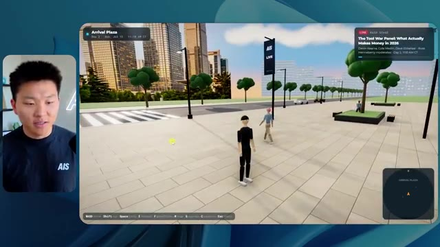
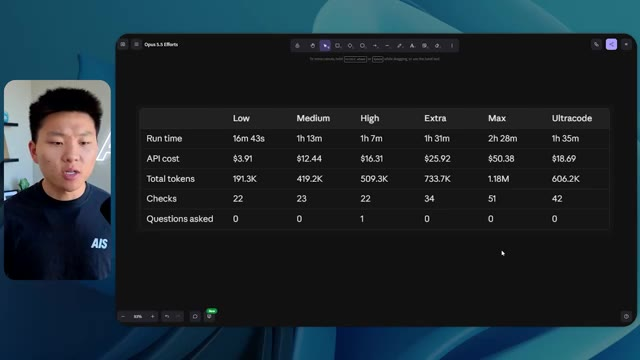

🎬 Comment Anthropic rédige VRAIMENT les prompts de Fable 5.1
📌 Synthèse Exécutive & Outils
Dans cette vidéo de la chaîne *Nate Herk | AI Automation*, l'analyste et expert en IA teste et compare rigoureusement les performances d'**Opus 5.5** (le modèle phare d'Anthropic) à travers différents niveaux d'effort (de faible à ultra code). L'expérimentation consiste à fournir un prompt complexe et unifié à des agents IA : transformer un dossier brut de 105 gigaoctets d'enregistrements vidéo (provenant de l'événement virtuel *AIS Live* sur Frame.io) en un monde virtuel 3D interactif et explorable à la troisième personne, intégrant des salles thématiques, des pistes de conférence, des flux vidéo en direct, et l'écosystème du système d'exploitation IA personnel de l'auteur.
La démonstration met en lumière l'impact direct du paramètre d'effort sur la qualité de rendu, la fidélité à l'identité de marque, la stabilité de la physique et des personnages, ainsi que sur l'utilisation des ressources. Alors que le niveau d'effort faible génère un monde rudimentaire, parsemé de bugs d'affichage, d'images figées et de personnages fantomatiques en 16 minutes pour environ 3,91 $, le niveau moyen élève considérablement la barre. Ce dernier produit un environnement 3D fonctionnel, esthétiquement aligné sur la charte graphique d'AIS Live, intégrant de véritables flux vidéo dynamiques, des PNJ interactifs et des structures de scènes complexes en 1 heure et 13 minutes pour un coût API estimé à 12,44 $, tout cela sans nécessiter la moindre intervention ou question de clarification de la part des agents.
### 🛠️ Outils, Modèles & Logiciels Présentés
* **Opus 5.5** : Modèle d'intelligence artificielle de pointe d'Anthropic, réputé pour son intelligence, son coût abordable et sa polyvalence, utilisé ici pour piloter la génération du monde 3D via des agents.
* **Claude Code** : Outil de programmation et d'assistance par IA d'Anthropic intégré aux flux de développement logiciel.
* **Frame.io** : Plateforme de collaboration vidéo cloud utilisée pour stocker et archiver le dossier massif de 105 Go des enregistrements d'AIS Live.
* **Herc 2** : Système d'exploitation IA personnalisé de l'auteur, servant de brique de ressources et d'automatisations accessible par les agents.
* **Key.ai** : Service de génération d'images et de vidéos par IA mobilisé pour la création de visuels au sein de l'environnement virtuel.
* **Glido** : Outil ou module partenaire intégré dans les stands virtuels de l'événement pour la diffusion de contenus spécifiques.
* **Hostinger (Connecteur)** : Extension gratuite pour éditeurs de code (VS Code, Cursor, Claude Code, etc.) permettant de relier en un clic son compte d'hébergement pour déployer instantanément des projets locaux.
### 🔑 Points Clés & Enseignements Stratégiques
* **Impact direct du niveau d'effort** : Le paramètre d'effort (faible, moyen, élevé, etc.) modifie profondément la profondeur, la logique et la robustesse du code et des artefacts générés par Opus 5.5.
* **Compromis temps/coût/qualité** : Un effort faible s'exécute rapidement (16 minutes) pour un coût modique (~3,91 $), mais livre un résultat de qualité médiocre (bugs visuels, absence de branding, images statiques). Un effort moyen, bien que plus long (1 heure 13 minutes) et plus coûteux (~12,44 $), garantit une immersion réussie, un respect strict de la charte graphique et des flux vidéo fonctionnels.
* **Autonomie totale des agents** : Dans les tests menés avec les niveaux faible et moyen, les agents ont exécuté la tâche complexe de bout en bout en posant un total de zéro question à l'utilisateur, démontrant une formidable capacité d'autonomie contextuelle.
* **Intégration de données massives** : Les agents ont prouvé leur aptitude à analyser et à exploiter intelligemment un volume brut considérable (105 Go de vidéos sur Frame.io) pour structurer un agenda de conférence cohérent (jour 1, jour 2, keynotes, ateliers).
* **Fidélité à l'identité de marque** : Le passage d'un niveau d'effort faible à moyen corrige radicalement l'intégration de la marque (logos, palettes de couleurs, badges nominatifs personnalisés), transformant un monde générique en un espace virtuel sur mesure.
* **Gestion de la physique et des PNJ** : Les niveaux d'effort supérieurs permettent d'injecter des comportements dynamiques rudimentaires aux personnages non-joueurs (PNJ), évitant ainsi les disparitions aberrantes et les bugs d'affichage constatés à l'effort faible.
* **Recommandation officielle d'Anthropic** : Lors du promptage d'Opus 5.5 pour des tâches complexes, il est recommandé de débuter par un niveau d'effort moyen, puis d'ajuster (à la hausse ou à la baisse) en fonction des besoins spécifiques du projet.
* **Le goulet d'étranglement du déploiement** : La création rapide d'applications complexes par l'IA déplace le défi technique vers la phase finale de mise en ligne, créant un besoin critique pour des outils de liaison directe entre l'environnement de développement local et l'hébergement web.
* **Automatisation du pont dev-prod** : L'utilisation d'extensions d'ingénierie comme le connecteur Hostinger élimine la friction entre la fin du code généré par l'IA et son déploiement public en un seul clic depuis l'éditeur.
* **Vérification empirique automatisée** : L'agent a réalisé de manière autonome plus de 20 cycles de vérification en ouvrant et testant le navigateur pour valider ses propres réalisations, illustrant une boucle de rétroaction intégrée propre aux agents de nouvelle génération.
🛠️ Outils, Modèles & Logiciels Présentés
🔑 Points Clés & Enseignements Stratégiques
- ✦& Enseignements Stratégiques
- ✦Impact direct du niveau d'effort** : Le paramètre d'effort (faible, moyen, élevé, etc.) modifie profondément la profondeur, la logique et la robustesse du code et des artefacts générés par Opus 5.5.
- ✦Compromis temps/coût/qualité** : Un effort faible s'exécute rapidement (16 minutes) pour un coût modique (~3,91 $), mais livre un résultat de qualité médiocre (bugs visuels, absence de branding, images statiques). Un effort moyen, bien que plus long (1 heure 13 minutes) et plus coûteux (~12,44 $), garantit une immersion réussie, un respect strict de la charte graphique et des flux vidéo fonctionnels.
- ✦Autonomie totale des agents** : Dans les tests menés avec les niveaux faible et moyen, les agents ont exécuté la tâche complexe de bout en bout en posant un total de zéro question à l'utilisateur, démontrant une formidable capacité d'autonomie contextuelle.
- ✦Intégration de données massives** : Les agents ont prouvé leur aptitude à analyser et à exploiter intelligemment un volume brut considérable (105 Go de vidéos sur Frame.io) pour structurer un agenda de conférence cohérent (jour 1, jour 2, keynotes, ateliers).
- ✦Fidélité à l'identité de marque** : Le passage d'un niveau d'effort faible à moyen corrige radicalement l'intégration de la marque (logos, palettes de couleurs, badges nominatifs personnalisés), transformant un monde générique en un espace virtuel sur mesure.
- ✦Gestion de la physique et des PNJ** : Les niveaux d'effort supérieurs permettent d'injecter des comportements dynamiques rudimentaires aux personnages non-joueurs (PNJ), évitant ainsi les disparitions aberrantes et les bugs d'affichage constatés à l'effort faible.
- ✦Recommandation officielle d'Anthropic** : Lors du promptage d'Opus 5.5 pour des tâches complexes, il est recommandé de débuter par un niveau d'effort moyen, puis d'ajuster (à la hausse ou à la baisse) en fonction des besoins spécifiques du projet.
- ✦Le goulet d'étranglement du déploiement** : La création rapide d'applications complexes par l'IA déplace le défi technique vers la phase finale de mise en ligne, créant un besoin critique pour des outils de liaison directe entre l'environnement de développement local et l'hébergement web.
- ✦Automatisation du pont dev-prod** : L'utilisation d'extensions d'ingénierie comme le connecteur Hostinger élimine la friction entre la fin du code généré par l'IA et son déploiement public en un seul clic depuis l'éditeur.
- ✦Vérification empirique automatisée** : L'agent a réalisé de manière autonome plus de 20 cycles de vérification en ouvrant et testant le navigateur pour valider ses propres réalisations, illustrant une boucle de rétroaction intégrée propre aux agents de nouvelle génération.
⏱️ Chronologie & Transcription Complète Audio & Visuelle (Mot pour Mot)
Opus 5.5, Opus 5.5, Opus 5.5, Opus 5.5, Opus 5.5. Ce modèle est littéralement partout et pour de très bonnes raisons. Il est intelligent, il est bon marché, il a un goût incroyable, c'est un modèle d'IA incroyable. Mais avec chaque modèle d'IA, vous avez le choix de l'effort, que ce soit faible, moyen, élevé, extra, max ou code ultra.
Interface & Outils : X (Twitter)
Contenu textuel & Code : Publication textuelle et visuelle concernant les impacts des modèles d'IA sur les créateurs techniques ("technical creatives are about to experience a massive disruption") avec une vidéo intégrée montrant un environnement 3D.
Action / Démonstration : Affichage d'un exemple concret de contenu généré par IA partagé sur les réseaux sociaux pour illustrer l'impact des nouveaux modèles.
 🔍 Agrandir
🔍 Agrandir
Donc dans cette vidéo, j'ai donné exactement le même prompt à Opus 5.5 et je l'ai exécuté sur chaque niveau d'effort et nous allons comparer les résultats. Nous allons examiner la qualité de tous les différents résultats réels, mais nous allons aussi examiner combien de temps chacun d'eux a pris pour s'exécuter, combien cela nous a coûté si c'était facturé par l'API, le total des jetons, combien de vérifications ils ont exécutées, et combien de questions ils m'ont réellement posées tout au long du processus.
Interface & Outils : Tableau de bord analytique ou interface de mind mapping / tableau blanc (type Miro ou Obsidian Canvas).
Contenu textuel & Code : Tableau comparatif des niveaux d'effort d'Opus 5.5 avec des données floutées pour chaque niveau.
Action / Démonstration : Présentation comparative des différents niveaux d'effort d'un modèle d'IA et de leurs métriques associées.
 🔍 Agrandir
🔍 Agrandir
Et les résultats que nous avons obtenus ne sont pas du tout ce à quoi je m'attendais, donc j'ai hâte de partager cela avec vous les gars. Ne perdons pas de temps et allons directement à celui-ci. D'accord, alors plongeons-nous directement dans celui-ci. Je veux commencer juste en vous montrant le prompt réel que nous avons utilisé que nous avons donné à chacun de ces différents agents. Je vais aller dans les fichiers ici, et nous allons ouvrir ce fichier markdown de prompt, et je vais vous montrer ce que nous avons obtenu. Voici donc le slash objectif que j'ai fourni.
Interface & Outils : Interface de l'outil de développement IA avec panneau de chat et gestion de worktrees / sessions.
Contenu textuel & Code : Message de l'agent IA invitant à commencer la tâche : "Hi Nate. This worktree has the effort-test task queued in PROMPT.md : build a walkable third-person 3D world...".
Action / Démonstration : Présentation de l'interface de l'outil de développement et du prompt initial de l'agent IA.
 🔍 Agrandir
🔍 Agrandir
J'ai dit, tu dois me créer un monde en 3D qui est une conférence tech réaliste dans laquelle je peux me promener en vue à la troisième personne. Tu vas regarder ce dossier, qui contient mes ressources d'enregistrement d'événements d'AIS Live. Et ce dossier est un dossier Frame.io de 105 gigaoctets d'enregistrements vidéo. C'était un événement complètement virtuel. Tout a été enregistré et tous les enregistrements sont ici. J'ai dit, ton objectif est de prendre cet événement et de le transformer en un monde explorable en 3D qui me donne l'impression d'être réellement allé à une vraie conférence en personne avec différentes salles, différentes pistes, différentes scènes, bla, bla, bla. N'hésite pas à utiliser key.ai si tu as besoin de générer des images ou des vidéos. Et tu peux aussi utiliser tout le reste dans mon projet Herc 2, qui est comme mon système d'exploitation IA. J'ai dit,
Interface & Outils : Éditeur de code (VS Code ou similaire) et interface web Frame.io
Contenu textuel & Code : Fichier Markdown (PROMPT.md) détaillant le prompt pour créer une conférence tech en 3D avec des salles, pistes et scènes, ainsi qu'un lien Frame.io de 105 Go.
Action / Démonstration : Présentation du prompt de configuration et des ressources d'enregistrement Frame.io de l'événement AIS Live.
 🔍 Agrandir
🔍 Agrandir
 🔍 Agrandir
🔍 Agrandir
 🔍 Agrandir
🔍 Agrandir
vous serez jugé sur la créativité, le design, la physique et la sensation générale lorsque j'explorerai le monde 3D que vous avez construit. Et c'était fondamentalement la fin des instructions. Donc, comme vous pouvez le voir sur ce côté gauche, j'ai exécuté cela à travers tous les différents niveaux d'effort. Commençons par le niveau bas et progressons jusqu'à l'ultra code. Très bien. Donc ici, nous avons le résultat du niveau bas. Ouvrons ceci et jetons un œil. Nous avons donc AIS Live, le sommet des services IA en personne enfin, et nous avons pu cliquer partout. Tout d'abord, on ne sent pas vraiment l'identité de la marque. Genre, ce n'ce n'est pas le logo d'AIS Live. Ce n'est même pas nos couleurs. Donc je n'aime pas trop ça, mais entrons ici. D'accord. C'est beaucoup trop lumineux. Euh, nous avons une carte en haut à droite. Nous avons une ville ici à l'arrière. Je ne peux pas dire quelle ville c'est.
Interface & Outils : Interface web d'assistant IA / éditeur de prompts (style Claude / agent conversationnel)
Contenu textuel & Code : Texte du prompt demandant de construire un monde 3D à la troisième personne avec des salles, pistes et scènes distinctes à partir d'enregistrements.
Action / Démonstration : Le présentateur survole les différents niveaux de test dans le panneau latéral gauche de l'interface.
 🔍 Agrandir
🔍 Agrandir
c'est. D'accord. C'est Chicago, ce qui est plutôt cool parce que tu sais, j'habite à Chicago, mais bref, en haut à droite, on peut voir une carte. Nous avons un hall d'accueil. Nous avons un hall d'exposition. Nous avons un salon VIP sur la scène principale. La carte montre également où se trouve chaque autre personne et cela se synchronise en direct. Donc on peut voir l'enregistrement. On peut voir le premier jour, la keynote de l'hyper agent, le débrief en direct. Cool. Donc ça connaît vraiment l'agenda et puis il y a le deuxième jour. Donc il a trouvé ça, c'est bien. Nous avons ces petites boules ici que je peux espérer botter. D'accord. Le visage, oh, regarde ça. Si je vais par ici, tous les gens disparaissent tout simplement. Très mauvais. Très mauvais. D'accord. Alors voyons voir. Est-ce que je peux sprinter ? D'accord.
Interface & Outils : Application web de monde virtuel interactif / métavers avec minimap et affichage tête haute (HUD).
Contenu textuel & Code : Menus d'événements, programmes de conférences, indicateurs de position et interface de navigation en 3D.
Action / Démonstration : Exploration virtuelle des différentes salles de l'événement et navigation guidée par la minimap.
 🔍 Agrandir
🔍 Agrandir
 🔍 Agrandir
🔍 Agrandir
 🔍 Agrandir
🔍 Agrandir
Je peux avancer un peu plus vite. Je vais d'abord aller par ici. Il y a des produits dérivés, euh, un sweat à capuche certifié AIS plus. D'accord. Donc il y a les vrais stands qu'on avait dans l'événement virtuel. On avait des stands. Donc c'est plutôt cool. Un petit endroit pour prendre des photos. Salle C. En ce moment, nous avons Tangy Frederick qui anime un atelier. D'accord. Mais ce n'est pas une vidéo. Comme vous pouvez le voir, c'est juste une image. Elle ne bouge pas. Donc c'est juste une image. Ces gens sont en train de disparaître. Ce doivent être des fantômes. Allons par ici dans la salle A.
Interface & Outils : Environnement virtuel 3D interactif (type jeu ou métavers).
Contenu textuel & Code : Affiche d'instructions textuelles et visuelles sur un écran dans le monde virtuel concernant la création de clés API.
Action / Démonstration : Navigation et exploration d'un espace d'événement virtuel 3D par le présentateur sous forme d'avatar.
Nous avons Liberty White. D'accord. Très cool. Vos 30 premiers jours en automatisation. Encore une fois, c'est juste une image fixe et les gens ont des bugs d'affichage. Donc ce n'est pas très bon ici. Je vais aller sur la scène principale et voir ce que nous avons. D'accord, cool. Donc nous avons une scène principale. Les gens ont des bugs d'affichage. Vraiment mauvais. Ce n'est vraiment pas bon du tout. Notre vidéo est en train de bouger. Genre, j'ai vu mon visage ici et j'ai vu celui de Devin, mais maintenant ils ont disparu. Donc je ne sais pas ce qui s'est passé. D'accord. C'est, on dirait que c'est plutôt un diaporama. Rien n'est vraiment lu pour l'instant. Bref, entrons ici.
Interface & Outils : Application web de monde virtuel interactif / métavers d'événementiel en ligne.
Contenu textuel & Code : Environnement virtuel 3D interactif avec avatars, salles d'atelier et scène de conférence virtuelle.
Action / Démonstration : Navigation et déplacement de l'avatar du présentateur entre les différentes salles et scènes du sommet virtuel.
 🔍 Agrandir
🔍 Agrandir
 🔍 Agrandir
🔍 Agrandir
 🔍 Agrandir
🔍 Agrandir
Nous avons plus de stands. Nous avons hyper agent. Nous avons Claude Code. Nous avons plus de goodies. La salle B, c'est Dave Ebelor. Je suppose que c'est exactement la même chose. Nous avons du café. Et ensuite, je suppose que le salon VIP, c'est accès VIP uniquement. C'est plutôt cool, mais il ne se passe vraiment rien ici. Cet écran est bien trop lumineux. D'accord. Donc je pense que vous comprenez l'ambiance qu'on obtient ici avec Opus 5.5 en effort faible. Et c'est là que les choses deviennent intéressantes. Combien de temps pensez-vous que cela a duré ? Combien de temps ? Celui-ci a duré 16 minutes et 43 secondes. Combien pensez-vous que cela a coûté ?
Interface & Outils : Application web collaborative / Tableau blanc numérique (Opus 5.5 Efforts).
Contenu textuel & Code : Tableau comparatif avec des colonnes de niveau d'effort (Low à Ultracode) et des lignes de métriques (Run time, API cost, Total tokens, Checks, Questions asked). [DESC_IMAGE_3]
Action / Démonstration : Navigation et présentation de l'interface de comparaison des niveaux d'efforts.
 🔍 Agrandir
🔍 Agrandir
3,91 dollars si c'était une facturation par API. J'utilise évidemment mon abonnement ici, mais nous allons simplement calculer cela avec la facturation par API. Le total des jetons était de 191 000. Il a fait 22 vérifications. Donc pour la vérification, 22 fois il a ouvert le navigateur et a exécuté différentes sortes de vérifications. Donc 22 catégories de vérifications. Et combien de questions m'a-t-il posées ? Il m'a posé un total de zéro question tout au long de cette invite de commande d'objectif. D'accord. Alors ouvrons l'effort moyen et voyons ce que nous avons. D'accord, c'est parti. Effort moyen. Nous avons Nate Herc. Nous avons mon badge. C'est la marque AI's life.
Interface & Outils : Tableau blanc ou application de mind mapping / diagramme (style Excalidraw) avec le présentateur en médaillon à gauche.
Contenu textuel & Code : Tableau avec les lignes : Run time, API cost ($3.91), Total tokens (191.3K), Checks, Questions asked, sous les colonnes Low, Medium, High, Ex.
Action / Démonstration : Le présentateur explique les métriques de performance et les coûts d'exécution de l'agent IA.
 🔍 Agrandir
🔍 Agrandir
Donc ça a déjà l'air un petit peu mieux. Ça ressemble à nos palettes de couleurs qui ont utilisé nos directives de marque. Premier jour de construction, deuxième jour de gain, VIP. Cool. D'accord. Je vais entrer dans le lieu. D'accord. Waouh. Une ambiance similaire, en somme. C'est en arrière-plan. Ça ne ressemble pas à Chicago, hein ? Non, ça ressemble à, honnêtement, ça ressemble à une ville inventée. Quoi qu'il en soit, c'est marrant qu'ils aient décidé de faire ça. Voyons si je peux me déplacer un peu plus vite. Oh, waouh.
Interface & Outils : Application web interactive / Environnement virtuel 3D (style navigateur ou métavers).
Contenu textuel & Code : Textes d'accueil ('Welcome to AIS Live', 'Nate Herk', 'Enter the Venue'), instructions de contrôle clavier (WASD walk, Shift sprint, Space jump) et boutons de menu (DAY 1 BUILD, DAY 2 EARN, VIP).
Action / Démonstration : Le présentateur navigue dans l'interface et s'apprête à entrer dans le lieu virtuel, puis explore l'environnement 3D en arrière-plan.
 🔍 Agrandir
🔍 Agrandir
 🔍 Agrandir
🔍 Agrandir
Les gens interagissent avec moi. Regardez. Si je m'approche de ce type, il vient de lever le bras. Bon, maintenant il ne veut plus du tout avoir affaire à moi. Mais tous ces petits robots ici doivent prendre des décisions. Je ne suis pas sûr s'ils utilisent Jev. C'est sûr que non. Je ne le lui ai pas dit. En fait, ma clé Jev est à l'arrière. Je ne sais pas. Peut-être qu'il l'a utilisée. Quoi qu'il en soit, nous pouvons voir ici que nous avons la Salle d'atelier C, le Laboratoire des agents. Sympa. Donc celui-ci est réellement en train de tourner. Vous pouvez voir qu'il s'agit d'une vraie vidéo lue par Tangy. Tout le monde ici est en train de travailler sur un ordinateur portable. Ils ne buguent pas. C'est plutôt cool. De plus, mon badge est sur ma poitrine, ce qui est plutôt cool. Je peux venir par ici. Nous avons une carte en haut à droite, comme vous pouvez le voir, mais je peux venir par ici. Nous avons un
Interface & Outils : Application de métavers / monde virtuel 3D
Contenu textuel & Code : Environnement virtuel 3D simulant une salle de conférence et des espaces de travail avec des agents autonomes ou des utilisateurs.
Action / Démonstration : Navigation et exploration dans l'environnement virtuel 3D.
hall d'exposition. C'est là que nous avons le stand Glido. Et ça diffuse actuellement. Oui, ça diffuse la vidéo de nous en train de parler de Glido. Ça diffuse la vidéo d'Ed et moi parlant de notre programme de certification. Nous avons le logo AIS Plus juste ici, qui est un peu mal placé. Ce sont les diapositives des conférenciers et les points clés. Alors wow, ce sont toutes les ressources que nous avons distribuées après l'événement. Elles sont toutes là aussi. Nous pouvons voir que nous avons un coup de projecteur sur la communauté. C'est donc Aiden qui parle de son contrat qu'il a décroché et ça se joue en direct. Ces gens sont en train de regarder.
Interface & Outils : Environnement virtuel 3D / Metavers d'exposition
Contenu textuel & Code : Présentations, diapositives de conférence et éléments d'interface utilisateur de navigation virtuelle
Action / Démonstration : Navigation et visite guidée de l'espace d'exposition virtuel par le présentateur
Ils sont plutôt engagés. On a l'hyper agent. C'était, c'est ce que je voulais dire. Si vous avez vu ces gens lever les bras en disant bonjour, c'était plutôt marrant. Regardez, regardez, le voilà qui recommence. Bref. Bon. Où est-ce que je suis maintenant ? Maintenant, je suis dans le hall principal. On a un bar à café. On a un grand logo, qui est le vrai logo. C'est trop lumineux, mais on a le logo. On peut voir si on peut entrer ici dans le parcours fondation. On a Sabrina Romanov et Liberty White. Donc différentes formations juste là. On peut entrer dans cette salle. C'est le parcours avancé. Alors qu'est-ce qui se passe ici. On a Dave Ebelar et Saman qui parlent de différentes choses là-dedans. Et maintenant, allons jeter un œil à la scène principale. Oh, attendez, il y a une vidéo de moi là-haut. C'est genre un VIP
Interface & Outils : Application de monde virtuel 3D / plateforme de métavers pour événement.
Contenu textuel & Code : Environnement 3D avec avatars virtuels, mini-carte en haut à droite, et interface de navigation.
Action / Démonstration : Navigation et déplacement de l'avatar dans le monde virtuel.
 🔍 Agrandir
🔍 Agrandir
 🔍 Agrandir
🔍 Agrandir
 🔍 Agrandir
🔍 Agrandir
section ? Ouais, on va aller voir ça dans une minute. Mais bref, voici la scène principale. Ça a l'air vraiment, vraiment bien. On a une grande scène. On a genre quatre personnes assises ici. On a les trois écrans d'Alex là-haut avec "hyper agent". Est-ce que j'ai le droit de monter sur scène ? Oh, et ça me laisse monter sur scène. D'accord. C'est plutôt sympa. Bon les gars, faisons un selfie. Laissez-moi prendre tout le monde en arrière-plan. Venez ici. Bref, c'est vraiment, vraiment cool. Toutes les places ne sont pas occupées par contre. Donc il faut qu'on travaille là-dessus. Mais bref, je vais courir voir ce qu'était cette section VIP. D'accord. Le salon VIP. J'ai l'impression que c'est comme un salon d'aéroport ou un truc du genre.
Interface & Outils : Environnement virtuel 3D / Plateforme d'événement en ligne (type metaverse de conférence)
Contenu textuel & Code : Interface utilisateur affichant "Hyperagent Keynote", nom du présentateur Alex McDonnell, et mini-carte de navigation en haut à droite.
Action / Démonstration : Navigation et déplacement d'un avatar à l'intérieur d'une salle de conférence virtuelle en 3D.
Ok, super. Donc maintenant nous avons les sessions VIP ici. Une FAQ VIP avec la lecture vidéo en direct de Nate juste ici. Très, très cool. Et nous avons comme un bar ou quelque chose comme ça. Génial. Je dirais que c'est un assez bon résultat. Maintenant, en ce qui concerne les statistiques ici, celle-ci a pris une heure et 13 minutes à s'exécuter. Cela nous aurait coûté 12 dollars et 44 cents. Elle a utilisé 490 000 jetons et elle a effectué 23 vérifications.
Interface & Outils : Interface web, Tableau de bord d'IA
Contenu textuel & Code : Run time: 16m 43s API cost: $3.91 Total tokens: 191.3K Checks: 22 Questions asked: 0
Action / Démonstration : Analyse des statistiques de performance d'un modèle d'IA.
 🔍 Agrandir
🔍 Agrandir
Et il nous a posé un total de zéro question une fois de plus. Très bien, passons à élevé. C'était déjà un résultat plutôt correct et Anthropic eux-mêmes dans leur vidéo, ou désolé, pas une vidéo, un article sur comment prompter Opus 5.5, ils ont dit de commencer simplement par moyen et de l'ajuster vers le haut ou vers le bas si besoin. C'était donc un résultat moyen. Passons à élevé et voyons ce qu'on a obtenu. Très rapidement, les gars, je dois prendre une seconde pour vous parler du sponsor de la vidéo d'aujourd'hui, Hostinger. Donc ces deux modèles viennent de me construire une version fonctionnelle de la même chose. Et maintenant, je suis exactement là où je finis toujours, avec un projet terminé sur mon ordinateur portable et aucun moyen rapide de le mettre en ligne. Et c'est le fossé que le connecteur d'Hostinger comble. C'est une extension gratuite
Interface & Outils : Application de tableau blanc ou tableau de bord analytique (Image 1) et environnement de développement de type IDE/éditeur de code avec assistant IA (Image 2).
Contenu textuel & Code : Tableau de données comparatives (Run time, API cost, Total tokens, Checks, Questions asked) et panneau de code/prompt textuel pour la création d'un outil de calcul ROI.
Action / Démonstration : Présentation comparative des résultats d'exécution selon différents niveaux d'effort de l'IA (Low vs Medium) et suivi du processus de génération de code.
 🔍 Agrandir
🔍 Agrandir
 🔍 Agrandir
🔍 Agrandir
pour votre éditeur qui intègre votre compte Hostinger dans l'outil de programmation que vous utilisez déjà, que ce soit VS Code, Cursor, Cloud Code, Codex, et j'en passe. Vous vous connectez une seule fois en un clic, et à partir de là, votre agent peut déployer le site, y associer un domaine, configurer les enregistrements DNS et vérifier votre VPS sans que vous n'ayez jamais à quitter l'éditeur. Ainsi, peu importe celui de ces outils que vous finirez par préférer, ce qu'il a construit n'est qu'à quelques minutes d'une vraie URL sur un hébergement géré. Le connecteur est gratuit avec chaque formule d'hébergement. Si vous avez donc encore besoin de l'hébergement sous-jacent, profitez de la formule illimitée grâce au lien dans la description et utilisez le code NATEHERK pour obtenir 10 % de réduction. Cela inclut également un nom de domaine gratuit et un e-mail professionnel pour un an. Et c'est toujours le moyen le plus économique que j'ai trouvé pour obtenir quelque chose
Interface & Outils : IDE (non spécifié, mais l'image montre une barre latérale d'outils), Outil de programmation (probablement VS Code, Cursor, etc.)
Contenu textuel & Code : Une liste d'outils disponibles pour l'intégration Hostinger, avec des options pour "Websites", "Domains", "Subscriptions & Payments" et "Email Marketing". Le statut de connexion "Connected" est affiché, ainsi que la version de Node.js.
Action / Démonstration : Visualisation de l'état de la connexion Hostinger à un IDE et des outils disponibles pour la gestion.
 🔍 Agrandir
🔍 Agrandir
tu as construit sur une vraie URL. Alors revenons à la vidéo. D'accord. Encore une fois, très, très thématisé par la marque. C'est un écran de chargement encore meilleur que le précédent. Nous avons ce petit effet sympa en arrière-plan. Nous avons le logo. Nous allons entrer dans le lieu. D'accord. Nous y voilà. Ça a l'air plutôt bien. Nous commençons à l'extérieur et tu peux voir que nous avons ces drapeaux pour tous les intervenants, Wyatt, Casper, Alex, Ed, Aiden, Sabrina, Liberty. C'est plutôt cool. Nous avons des blocs en direct ici.
Interface & Outils : Application web 3D / plateforme virtuelle interactive d'événement.
Contenu textuel & Code : Interface utilisateur de jeu 3D, bannières d'événements, instructions de déplacement et mini-carte.
Action / Démonstration : Exploration et entrée dans l'espace virtuel interactif de l'événement.
 🔍 Agrandir
🔍 Agrandir
 🔍 Agrandir
🔍 Agrandir
 🔍 Agrandir
🔍 Agrandir
il a pris cette photo de moi, votre hôte, Nate Herc, John, Dave, Nate Herc. Voilà. OK. Les portes. Génial. Ce sont des portes coulissantes automatiques en verre. J'adore ça. Nous pouvons voir l'enregistrement VIP. Nous pouvons voir l'admission générale. Nous pouvons venir par ici et nous pouvons découvrir l'exposition avec différents stands, le projecteur sur la communauté. Vous pouvez également voir qu'en haut à gauche, j'ai un passeport. Donc c'est comme, il montrera combien d'endroits j'ai visités. Tout cela est une lecture réelle. Nous avons un mur de ressources avec tous les différents conférenciers. Ils ont également une session de networking par ici. Je vais donc venir très vite voir de quoi il retourne. Nous avons donc le bar à cold brew AIS. Nous avons différents membres de la communauté qui ont été mis en avant ou en lumière.
Interface & Outils : Application ou plateforme virtuelle 3D (metaverse/événement virtuel).
Contenu textuel & Code : Environnement virtuel 3D avec des bannières 'Registration Concourse', 'Main Stage' et 'Expo Hall'.
Action / Démonstration : Exploration d'un espace virtuel 3D par l'avatar du présentateur.
 🔍 Agrandir
🔍 Agrandir
 🔍 Agrandir
🔍 Agrandir
 🔍 Agrandir
🔍 Agrandir
Nous avons l'aile VIP. Attends, quoi ? Prends un bracelet. Oh, je dois vraiment aller chercher le bracelet. D'accord. Laisse-moi m'enregistrer rapidement. Le bracelet est déjà mis. Attends, quoi ? D'accord. Oh, d'accord. Maintenant, les portes se sont ouvertes pour moi. Cool. Je peux entrer ici. Oh, ça mène juste à la scène principale. Salon VIP. Il y a une séance de questions-réponses en cours. Ça a l'air très cool. Je veux dire, je suis très impressionné par la façon dont il est capable de faire ça. Waouh. D'accord. Donc c'est vraiment bien. Ce qu'on a fait, c'est qu'on a eu des salles de discussion VIP avec différentes personnes. Tu peux voir qu'il y a différentes salles, différents membres de l'équipe AIS qui participent à des trucs. C'est vraiment cool. C'est très cool. C'est un VIP bien meilleur
Interface & Outils : Application virtuelle 3D / Environnement de conférence en ligne.
Contenu textuel & Code : Éléments textuels d'interface ("Registration Concourse", "VIP Lounge", "VIP Working Sessions", "Land Your First Paying Client").
Action / Démonstration : Navigation et exploration de l'espace virtuel par le présentateur.
 🔍 Agrandir
🔍 Agrandir
 🔍 Agrandir
🔍 Agrandir
 🔍 Agrandir
🔍 Agrandir
expérience que ce qui a été montré dans la première partie. D'accord. After party VIP. Regardez ça. On a une piste de danse. On a tous ces éléments ici. On a la lecture de l'after party VIP juste ici. Et il y a une estrade de DJ. C'est trop marrant. Il y a un petit bug ici, un petit glitch ici, mais c'est génial. Oh, cool. Donc quand je suis ici sur la scène principale, on a des sous-titres. Vous pouvez voir juste ici en bas de mon écran, on a ces sous-titres de Wyatt qui est en train de parler là-haut. On a des lumières. On a le panel. Très cool. Belle scène principale. Je vais aller ici. On peut aller à la fondation,
Interface & Outils : Application web virtuelle 3D / Metavers
Contenu textuel & Code : Environnement virtuel interactif avec avatars 3D, flux vidéo en direct et interface utilisateur de navigation
Action / Démonstration : Navigation et exploration d'un monde virtuel 3D avec des participants et des présentations en direct
 🔍 Agrandir
🔍 Agrandir
 🔍 Agrandir
🔍 Agrandir
 🔍 Agrandir
🔍 Agrandir
avancé, et les parcours d'entreprise par ici. Donc voyons voir. Nous avons l'anatomie de trois vrais contrats. Nous avons hyper agent. Nous avons les évals avec Nate et Ed ici. Nous avons Dave qui s'occupe des trucs avancés. C'est vraiment bien. Je veux dire, évidemment, chacun, chacun de ces résultats jusqu'à présent, faible était correct. Moyen était meilleur. Élevé a été encore meilleur. Voyons si cette tendance se poursuit et allons voir ce que cela nous a coûté. Donc, élevé a tourné pendant une heure et sept minutes. Donc un peu plus rapide que moyen, cela nous aurait coûté 16 dollars et 31 cents. Il a utilisé un demi-million de tokens, 509 000. Il a fait 22 vérifications. Et il nous a aussi demandé, enfin, non, je me suis trompé. Ce
Interface & Outils : Application de tableau blanc / outil de mindmapping (style Excalidraw ou équivalent)
Contenu textuel & Code : Tableau comparatif 'Opus 5.5 Efforts' montrant des métriques (Run time, API cost, Total tokens, Checks, Questions asked) pour Low ($3.91), Medium ($12.44), High ($16.31).
Action / Démonstration : Analyse et comparaison des performances et des coûts des différents niveaux d'effort de l'agent IA.
 🔍 Agrandir
🔍 Agrandir
l'un m'a posé une question et, divulgâcheur, c'était le seul qui nous a posé une question tout au long de tout ça. Voyons voir, il nous en reste trois : Extra, Max et Ultra Code. Laissez-moi ouvrir Extra et nous verrons ce que nous avons. D'accord. Donc celui-ci a l'air plutôt bien. Je dirais honnêtement que jusqu'à présent, l'écran de chargement haut était le meilleur. Celui qu'on vient juste de voir, mais bref, entrons dans AIS live.
Interface & Outils : Application de tableau de bord ou interface de notes visuelles.
Contenu textuel & Code : Tableau comparatif avec les lignes : Run time, API cost, Total tokens, Checks, et Questions asked.
Action / Démonstration : Le présentateur commente les résultats du tableau et s'apprête à ouvrir les détails de la colonne 'Extra'.
 🔍 Agrandir
🔍 Agrandir
Whoa. D'accord. Donc on a genre des petits extraits sonores. Je peux discuter avec les gens. Le panneau sur la guerre des outils a réglé quelques débats pour moi. Sympa. Bonne perspective là-bas. On est dehors à nouveau. On a ces différentes bannières, bien qu'elles soient toutes les mêmes. Elles n'affichent pas genre les noms de différentes personnes. Donc gros logo AIS live. L'aile de l'atelier est par ici. Et passons par les portes coulissantes en verre pour voir ce qu'on a. Donc on a le café AIS. La carte est en bas à droite, et elle n'est pas très descriptive.
Interface & Outils : Environnement virtuel 3D interactif (plateforme web/metaverse)
Contenu textuel & Code : Monde virtuel en 3D avec avatars, bannières "AIS LIVE", mini-carte en bas à droite et bulles de discussion.
Action / Démonstration : Navigation et exploration de l'espace virtuel par le présentateur.
 🔍 Agrandir
🔍 Agrandir
 🔍 Agrandir
🔍 Agrandir
 🔍 Agrandir
🔍 Agrandir
J'aime bien comment les autres cartes nous ont montré ce qu'il y avait, genre où étaient les choses, mais celle-ci a l'air très professionnelle. On peut voir ici la scène principale. Allons y faire un tour rapidement. Ils ont tous ces ballons qui volent partout, ce qui je trouve est plutôt marrant. Les ballons de plage AIS. On me voit là-haut en train de parler. Je crois que j'étais en train de présenter l'une des journées. Continuons à avancer par ici vers la salle d'atelier sur ce côté gauche. D'accord. Donc ici, nous avons le théâtre Hyper Agent. Nous avons cette session sponsorisée ici par Hyper Agent, mais cela nous montre aussi ce qui va s'y passer. C'est vraiment marrant qu'on puisse discuter avec les gens. Salmon a créé un commercial vocal en direct. La salle "Le Juste Prix" était comble. Tu as pris le guide du compagnon VIP ? C'est tellement marrant. Nous avons le parcours avancé dans
Interface & Outils : Interface web d'un monde virtuel interactif en 3D (type plateforme de conférence virtuelle).
Contenu textuel & Code : Environnement 3D avec avatars d'utilisateurs, interface de chat et affichages vidéo en direct ("Main Stage").
Action / Démonstration : Navigation et exploration de différentes zones de l'événement virtuel par le présentateur.
 🔍 Agrandir
🔍 Agrandir
 🔍 Agrandir
🔍 Agrandir
 🔍 Agrandir
🔍 Agrandir
ici. Encore une fois, nous avons la lecture en direct. Est-ce que c'est une lecture en direct ? Oh, d'accord. Ça a commencé une fois que je suis entré, mais je peux prendre place. Oh la la. Je peux regarder ça. Je peux me lever. Je veux m'asseoir au premier rang. C'est plutôt cool. C'est très bien. J'aime ça. Et tu sais ce que j'ai remarqué jusqu'à présent ? Le personnage réel que j'incarne me ressemble un peu. Je pense qu'il s'est inspiré de mes photos de profil ou quelque chose comme ça. Quoi qu'il en soit, nous avons Sabrina ici, l'animatrice de la salle ici, prenez n'importe quelle place libre. D'accord, super. Et j'ai vraiment aimé la fonctionnalité pour s'asseoir. C'est plutôt marrant. Genre, on pourrait vraiment assister à cet atelier et participer. Quoi qu'il en soit, ça nous montre les conférenciers. Ça nous montre les
Interface & Outils : Application de métavers ou de salle de classe virtuelle interactive 3D.
Contenu textuel & Code : Interface d'événement virtuel avec écrans de présentation de l'atelier 'Workshop Block 2'.
Action / Démonstration : Navigation et exploration de l'espace de la salle de classe virtuelle en 3D.
 🔍 Agrandir
🔍 Agrandir
 🔍 Agrandir
🔍 Agrandir
 🔍 Agrandir
🔍 Agrandir
agenda. Il y a un petit tapis rouge ici pour prendre des photos. On peut prendre la pose. Oh, waouh. C'est plutôt cool. Bibliothèque de ressources, obtenez la certification AIS Plus, Glido, Hyper Agent, AIS Plus, trois vraies offres. Génial. Je veux dire, je dirais vraiment qu'jusqu'à présent, chacune est meilleure. Et on n'a même pas encore vu la section VIP, le salon VIP. Allons par ici très vite. J'espère que je pourrai entrer. Sympa. On a le réinitialisation des outils. Ce sont les différentes salles où l'on peut aller. Donc encore une fois, je pourrais prendre la feuille de calcul et je pourrais essayer de comprendre comment tarifer mes trucs. C'est tellement cool. C'est vraiment mieux que le précédent où l'on faisait juste en quelque sorte
Interface & Outils : Application ou plateforme virtuelle 3D (Metaverse / environnement virtuel d'événement).
Contenu textuel & Code : Environnement virtuel 3D avec des avatars, des stands de sponsors (Hyperagent, Glido) et des interfaces textuelles d'interaction. [COMPILATION] Navigation et exploration de l'espace virtuel par le présentateur.
Action / Démonstration : Explications face caméra et démonstration conceptuelle.
genre regardé des trucs. Génial. Je peux passer derrière le bar et venir ici. C'est très bien. Bon. Alors, en ce qui concerne les statistiques, celle-ci a tourné pendant une heure et demie. Elle coûte 25,92 dollars. Je ne sais pas pourquoi je dis point 25, 92 cents. C'était 733 000 jetons et 34 vérifications. Elle a donc eu le plus grand nombre de vérifications de loin jusqu'à présent. Et elle ne nous a posé aucune question. J'ai hâte de voir ce qu'on a obtenu ici de max et ultra code. D'accord. Voici les écrans de chargement de max, ennuyeux, mais c'est dans l'esprit de la marque et il y a notre logo.
Interface & Outils : Outil de tableau de bord / application de présentation (type outil de mindmapping, design ou interface web personnalisée).
Contenu textuel & Code : Tableau avec les en-têtes "Medium", "High", "Extra", "Max", "Ultracode" et des lignes de données (temps : "1h 13m", "1h 7m", "1h 31m" ; coûts : "$12.44", "$16.31" ; tokens : "419.2K", "509.3K", etc.).
Action / Démonstration : Le présentateur commente les différentes colonnes de statistiques affichées à l'écran concernant les performances des modèles selon les niveaux d'effort.
 🔍 Agrandir
🔍 Agrandir
Alors, c'était bien. J'aime bien. On va y aller et entrer dans AIS en direct. Oh, petite animation sympa ici qui nous fait entrer. Encore une fois, le personnage me ressemble. Ils m'ont tous ressemblé. Je veux dire, en gros, nous sommes assis en arrière-plan. On dirait Chicago. Comme je l'ai mentionné plus tôt, beaucoup de ces éléments jouent des sons et je ne les inclus pas parce que ce serait très perturbant pour vous d'essayer d'écouter ce qui se passe en même temps que moi je parle. Donc il y a une sorte de musique légère dans tout ça. Je déteste cette façon de marcher. Cette façon de marcher est vraiment, vraiment mauvaise. Je veux dire, la marche, ouais, je n'aime pas du tout ça. Donc ce n'est pas génial. Mais à part ça, allons explorer. Remarquez ces ombres quand je rentre, elles basculent vraiment. Je ne sais pas trop pourquoi,
Interface & Outils : Application web 3D immersive / Plateforme virtuelle AIS Live
Contenu textuel & Code : Environnement virtuel 3D interactif avec avatars, mini-carte en bas à droite, interface de contrôle et affichage d'événements en direct (panel "The Tool War").
Action / Démonstration : Navigation et exploration de l'espace virtuel 3D avec un avatar par le présentateur.

🔍 Agrandir 🔍 Agrandir
🔍 Agrandir
 🔍 Agrandir
🔍 Agrandir
Mais de toute façon, on peut discuter avec des gens ici aussi. Le stand Hyperagent est juste là où on entre dans l'exposition. Tout va bien. D'accord, super. Je peux continuer à appuyer sur E pour faire changer ce qu'ils disent. On a les conférenciers juste ici. Ça a l'air plutôt bien. Bien qu'on avait vraiment la photo de profil de tout le monde. Je ne sais donc pas trop pourquoi ce n'est pas inclus là. On voit des gens prendre des photos juste ici. J'adore ça. Et ça sauvegarde une petite photo. D'accord. La carte n'est pas super non plus, genre elle ne donne pas une super explication de ce qui se passe, mais j'aime bien ces stands. Ils sont cool. Je pense que ces stands sont les meilleurs que j'aie vu jusqu'à présent. Genre, ils ont juste l'air bien. Ils ont des représentants. Il y a de superbes diapos derrière eux. Ouais. Ces stands sont cool. D'accord. On a un petit théâtre mis en avant
Interface & Outils : Environnement virtuel 3D interactif (plateforme d'événement virtuel)
Contenu textuel & Code : Éléments graphiques d'interface de navigation virtuelle (commandes clavier en bas, mini-carte, affichage des conférenciers)
Action / Démonstration : Exploration de l'espace virtuel, déplacement de l'avatar et interaction avec les stands d'exposition.
 🔍 Agrandir
🔍 Agrandir
 🔍 Agrandir
🔍 Agrandir
 🔍 Agrandir
🔍 Agrandir
qui se passe par ici. C'est Casper. Bien que pourquoi est-ce que ça ne joue pas ? J'ai l'impression que ça devrait jouer, non ? Comme dans les autres, ils étaient toujours en train de jouer. On peut parler à d'autres personnes par ici. Le café est gratuit. Blabla. Amy Simpson, Matt Wolf. Super. Bon. C'est juste la zone de réseautage dans laquelle nous sommes en ce moment, mais on peut voir en haut à droite. On peut aussi voir ce qui est en direct sur la scène principale en ce moment. C'est un panel de guerre des outils. Alors allons par ici. Nous avons Devin, Cole, Dave et Russ qui discutent ici. Nous avons en quelque sorte de l'audiovisuel, des petits trucs de lumière qui se passent par ici.
Interface & Outils : Environnement virtuel 3D / Navigateur web
Contenu textuel & Code : Aucun code source, terminal, prompt ou donnée technique affiché (uniquement des graphismes de monde virtuel 3D et des interfaces de salon virtuel).
Action / Démonstration : Navigation d'un avatar utilisateur dans un salon de conférence et d'exposition virtuel en 3D.
Passe la scène principale sur ce qui compte vraiment en ce moment. Comme ça, je peux changer de sujet. Cool. Je viens de passer sur moi et Matt. On peut passer à l'anatomie de trois vraies transactions. C'est plutôt cool. La scène a l'air bien. On a un petit panneau sympa ici. Je peux monter sur la scène ? Sympathique. Sympathique. Bon, je ne peux pas aller trop loin, en fait. Très bien tout le monde, laissez-moi prendre le selfie. Tout le monde vient là-dedans. Je peux aussi m'asseoir dans le public par ici et juste profiter de la session.
Interface & Outils : Interface de monde virtuel 3D / plateforme de conférence en ligne (type Gather.town ou similaire).
Contenu textuel & Code : Éléments graphiques d'interface utilisateur (commandes WASD, mini-carte, affichage de session en direct).
Action / Démonstration : Navigation et déplacement de l'avatar dans l'espace virtuel de la conférence.
Très cool, très cool. OK, allons par ici. Je vois une section à l'étage. C'est marrant comme ils choisissent tous de mettre la section VIP à l'étage. Je veux dire, je ne déteste pas ça. Oh la la, ils ont un escalator. Pas possible. Je vais discuter avec ce type sur l'escalator. Glenn a 15 ans d'expérience en agence. Ses trucs de "land and expand" étaient en or. Du beau boulot, Glenn. Cool, donc je vais, je n'arrive même pas à passer devant ce type par contre.
Interface & Outils : Application ou plateforme virtuelle 3D en ligne de type événementiel/métavers
Contenu textuel & Code : Environnement virtuel 3D interactif avec interface de navigation, mini-carte et bulles de discussion textuelles au-dessus des avatars
Action / Démonstration : Exploration d'un espace virtuel 3D et interaction textuelle avec un autre avatar sur un escalator
 🔍 Agrandir
🔍 Agrandir
 🔍 Agrandir
🔍 Agrandir
 🔍 Agrandir
🔍 Agrandir
Oh, il a fallu que je saute par-dessus lui. D'accord, niveau VIP, badge requis. Oh la la. Tu te moques de moi ? Je dois aller chercher mon badge. D'accord, super. Maintenant, ça montre que je suis un vrai VIP et je peux monter ici dans la section VIP. Nous avons de petites sessions de travail sympas là-bas, auxquelles nous pouvons participer. Je me demande si ça va me laisser m'asseoir ici. Je peux juste discuter. Est-ce que je peux participer ? Ça ne me laisse pas m'asseoir et participer. C'est pas grave. On a la salle de crise des prix. Oh, ça pourrait être l'after-party. Allons voir ce qui se passe par ici. Ou peut-être que je dois juste entrer par ici. D'accord. C'est bizarre. Je devais juste entrer par ici. Cet after-party n'est pas aussi cool que l'autre. Mais bref, allons voir ce qui se passe par ici.
Interface & Outils : Environnement virtuel 3D / Plateforme d'événement en ligne (type Gather.town ou métavers similaire)
Contenu textuel & Code : Interface utilisateur de la plateforme virtuelle affichant le profil de l'utilisateur (Nate Herk), un mini-carte et des panneaux d'information.
Action / Démonstration : Navigation et exploration d'un monde virtuel interactif par le présentateur.
dans les ateliers. D'accord. Ce n'était pas bien. Regardez ça. On peut tout voir et je viens de bugger et maintenant boum. Donc ce n'est pas bon. Je dirais qu'globalement, je veux dire, vous saisissez l'ambiance de la façon dont ça fonctionne, mais je dirais que celui d'avant, qui était, je crois, "élevé", j'aimais mieux celui-là. Je ne peux pas m'asseoir dans ces chaises non plus. Ouais. Donc je n'aime pas la marche dans celui-ci.
Interface & Outils : Application web virtuelle interactive 3D type metaverse ou plateforme d'événements virtuels en ligne.
Contenu textuel & Code : Environnement virtuel 3D interactif avec des avatars, des affichages de salles et des interfaces de chat.
Action / Démonstration : Navigation et déplacement d'un avatar dans un espace virtuel d'ateliers et de conférences en ligne.
 🔍 Agrandir
🔍 Agrandir
 🔍 Agrandir
🔍 Agrandir
 🔍 Agrandir
🔍 Agrandir
Je n'aime pas autant l'ambiance et il y a quelques bugs. Donc, jusqu'à présent, si nous voulons regarder notre liste, j'aime bien Extra Extra, c'était celui que j'aimais le plus jusqu'à présent. Mais de toute façon, celui-ci était au maximum. Celui-ci était au maximum juste ici. Voyons donc combien de temps cela a duré : deux heures et 28 minutes. Ça a donc duré longtemps, 50 dollars et 38 cents, 1,18 million de jetons. Il a donc atteint une compaction et a dû faire une auto-compantation. Et ensuite, il a fait 51 vérifications. L'a-t-il vraiment fait, par contre ? Parce qu'il y avait beaucoup de bugs là-dedans. Et de toute façon, celui-ci ne nous a posé zéro question. Donc, jusqu'à présent, à chaque fois, ça a presque été plus cher et ça a pris plus de temps, à part ici. Mais ceux-ci en gros
Interface & Outils : Application web de tableau ou de comparaison de modèles (style interface de canvas ou outil d'analyse).
Contenu textuel & Code : Tableau avec des colonnes Medium, High, Extra, Max, Ultracode et des lignes de données (temps, coûts en dollars, tokens, etc.).
Action / Démonstration : Le présentateur analyse et compare les différentes colonnes du tableau, s'attardant sur l'option 'Max'.
 🔍 Agrandir
🔍 Agrandir
a pris à peu près le même temps, mais à chaque fois, il a utilisé plus de jetons parce qu'il a davantage réfléchi. Et puis, vous savez, ces jetons vont coûter plus cher. Mais bref, passons au dernier, qui est Ultra Code. Donc, nous espérons vraiment que celui-ci sera le meilleur. Alors, allons voir sur ce localhost ce que nous avons. Ok, super. Regardez ce badge. C'est un joli badge « host all access ». Nous avons un petit visuel sympa juste ici. Nous allons aller de l'avant et entrer « AIS Live ». Cool. Ok. Bienvenue, Nate. J'aime bien la marche. Ça a l'air réaliste. J'aime le logo, même s'il manque le petit point rouge qui donne l'impression que c'est du direct. La carte en haut à droite
Interface & Outils : Tableau de bord comparatif et application virtuelle 3D 'AIS LIVE'.
Contenu textuel & Code : Métriques de performance des agents IA (coûts en dollars, temps d'exécution, nombre de jetons) et environnement virtuel interactif.
Action / Démonstration : Comparaison des coûts et des performances des différents modes d'IA, puis présentation du résultat final sous forme d'application 3D.
 🔍 Agrandir
🔍 Agrandir
 🔍 Agrandir
🔍 Agrandir
est un tout petit peu mieux étiqueté, donc je peux voir ce qui se passe. Je vais venir ici et récupérer mon bracelet VIP rapidement. Ok, super. Ça me dit aussi quoi faire. Donc en haut à gauche, ça dit de scanner à l'entrée VIP au mur est du hall. Donc je crois que l'est serait par là, non ? Never eat soggy waffles. Ouais. Ailes VIP, scanner le bracelet. Ok, cool. Maintenant je suis dans la section VIP. Je peux voir ces différentes salles. L'outil a été réinitialisé. La vidéo en direct est en train d'être diffusée. Je peux voir les sous-titres juste là de ce dont on est en train de parler. Ça diffuse aussi les sons, mais je ne diffuse tout simplement pas l'audio pour vous les gars parce que je ne veux pas saturer.
Interface & Outils : Jeu vidéo ou simulation virtuelle 3D (interface type monde virtuel).
Contenu textuel & Code : Textes d'indications de quête (« Already on your wrist », « VIP Wing », « VIP Room 5 »).
Action / Démonstration : Navigation et exploration de l'espace virtuel par le présentateur.
Encore une fois, celui-ci fonctionne avec Cody et Mustafa là-dedans. C'est génial. Vidéo en direct. La vidéo ne se lance pas tant qu'on n'entre pas, par contre. Donc, honnêtement, je pense que c'est un bon choix. Dès que j'entre, par contre, la vidéo démarre. Sympa. Belle attention. Toutes ces pièces. Génial. Ouais. Je veux dire, ça fait très haut de gamme. Voici une salle de guerre des prix. Allons voir ça. Moi et John là-dedans.
Interface & Outils : Application web de monde virtuel 3D / métavers
Contenu textuel & Code : Environnement virtuel interactif affichant le texte 'VIP Wing', des salles de réunion et une vidéo en direct visible à travers les vitres.
Action / Démonstration : Navigation et déplacement de l'avatar dans l'espace virtuel pour tester l'affichage des flux vidéo en direct.
 🔍 Agrandir
🔍 Agrandir
Et ensuite nous avons l'after-party sympa. Cet after-party n'est pas encore aussi animé. Et nous avons plus de ballons de plage pour une raison quelconque, mais cet after-party est cool. Je veux dire, ça nous donne une bonne ambiance et il y a la retransmission juste ici de notre session de questions-réponses de l'after-party, tout cela est en direct aussi. Génial. D'accord. Allons vers la scène principale. Cela m'invite aussi à prendre une place côté allée à la scène principale, qui est tout droit en traversant l'expo. Donc en fait, traversons d'abord l'expo. Qu'est-ce que vous construisez ? Il y a beaucoup de gens qui parlent de différentes choses par ici. Wow. Il y a aussi genre un petit truc de basketball. Est-ce que je peux le lancer ? Je peux. Est-ce que je dois regarder en l'air pour le lancer ? D'accord.
Interface & Outils : Application de métavers / monde virtuel 3D en ligne
Contenu textuel & Code : Environnement virtuel 3D représentant une after-party, un couloir VIP et un hall d'exposition avec des post-its communautaires
Action / Démonstration : Navigation et exploration de différents espaces virtuels au sein de la plateforme 3D
Eh bien, pas terrible. Mais bref, nous avons un stand AIS plus. Nous avons le stand Glido. Est-ce que ça diffuse en direct ? Oui, ça diffuse définitivement en direct. Sympa. Nous avons le stand Hyper Agent. Nous avons d'autres trucs par ici. Bon, super. Je vais aller dans la grande salle et voir si on peut choper un siège côté allée. Dès qu'on entre, tout se met à jouer. On a une ambiance de scène très sympa. Comment je fais pour choper un siège côté allée par contre. Voilà. Il a fallu que je trouve le bon. Je chope le siège côté allée. Il n'y a personne sur scène, ce qui est bizarre. J'aimais bien quand il y avait du monde sur scène dans les versions précédentes.
Interface & Outils : Application web de monde virtuel 3D / événementiel en ligne (AIS Live).
Contenu textuel & Code : Éléments textuels d'interface utilisateur de navigation virtuelle, plans et sous-titres contextuels.
Action / Démonstration : Exploration et navigation dans un espace virtuel d'événement en ligne.
Prenons un petit selfie. Bref, il y a moi et Pat là-haut. Pat est habillé comme un ouvrier du bâtiment. Comme vous pouvez le voir, nous faisions un petit appel de découverte simulé dans cet exemple. Je vais revenir par l'expo et nous allons sortir ici dans l'aile de l'atelier et juste vérifier si ces rooms sont fondamentalement exactement les mêmes qu'elles devraient l'être. Maintenant, je ne peux pas vraiment discuter avec les gens. J'en étais capable, dans les versions précédentes, de discuter avec les gens, ce que je trouvais être une très belle touche. Et nous avons l'atelier d'une piste de fondation. Est-ce que je peux m'asseoir ?
Interface & Outils : Application virtuelle 3D / plateforme de simulation d'événements en ligne.
Contenu textuel & Code : Environnement virtuel 3D avec des avatars, mini-carte de navigation et sous-titres textuels.
Action / Démonstration : Navigation et déplacement à l'intérieur de l'espace virtuel 3D (Expo Hall et Workshop Wing).
 🔍 Agrandir
🔍 Agrandir
 🔍 Agrandir
🔍 Agrandir
 🔍 Agrandir
🔍 Agrandir
Je ne peux pas m'asseoir. Je ne sais pas. Nous avons Liberty qui est en train de parler en ce moment même et elle parle et nous pouvons l'entendre. C'est donc sympa, mais ça ne me laisse pas m'asseoir. Et regardez ça. Je deviens assez instable ici. Ça buguait de la façon dont je marchais. Ça ne me laissera pour ainsi dire pas marcher. Ce n'est pas bon. Pareil. Nous avons cette piste avancée là-dedans. Génial. Donc, dans l'ensemble, ils ont une ambiance très similaire. Je dirai que je suis impressionné par la façon dont ils ont été capables de raconter une histoire à partir de ce que nous faisions. Bibliothèque de points clés de l'intervenant. D'accord. C'est cool. Je ne pense pas que nous ayons vu cela de différents endroits, mais ce sont comme les ressources et qui montrent des trucs sympas. Oh, waouh. Je
Interface & Outils : Application de métavers / monde virtuel 3D de type conférence ou atelier.
Contenu textuel & Code : Interface utilisateur avec des en-têtes de salles virtuelles ('Workshop A', 'Workshop B', 'Speaker Takeaways Library'), des mini-cartes et des bulles de dialogue.
Action / Démonstration : Navigation et exploration de différentes salles dans un environnement virtuel 3D.
peut effectivement ouvrir toutes ces choses et nous pouvons prendre des photos ici même aussi. Super. Prendre une photo. Je peux aussi l'enregistrer. Genre, je peux vraiment télécharger ceci. Et maintenant nous avons cette photo que nous venons de prendre à cet événement en direct d'AIS. Très bien. Eh bien, je pense qu'il est temps pour moi de tirer quelques conclusions, mais voyons d'abord ce que cette exécution nous a coûté. Cela a pris une heure et 35 minutes. C'était donc beaucoup plus rapide que max. Cela n'a coûté que 18 dollars et 69 cents. Waouh. C'était donc un peu plus cher que high, moins cher qu'extra et beaucoup moins cher que max. Cela a également consommé 606 000 jetons et 42 vérifications avec zéro question. Maintenant, une autre chose intéressante à noter est que tout
Interface & Outils : Visionneuse d'images Windows et application de diagramme/tableau blanc.
Contenu textuel & Code : Photo d'un événement virtuel 'AIS LIVE' avec des avatars et un tableau de statistiques tarifaires/temporelles.
Action / Démonstration : Le présentateur montre la photo téléchargée de l'événement en direct, puis navigue vers un tableau de données.
 🔍 Agrandir
🔍 Agrandir
 🔍 Agrandir
🔍 Agrandir
ces exécutions, aucune d'entre elles n'a utilisé de sous-agent. J'ai vérifié et je me suis assuré qu'aucune d'elles n'avait utilisé de sous-agents. Ils ne voulaient déléguer aucun travail, ce qui était intéressant. Donc ces jetons sont ce qui a été reflété à l'intérieur de cette session. Évidemment, comme je l'ai dit, celle-ci a dépassé, vous savez, 950 000, donc, ou quelle que soit la fenêtre de compactage. Je ne la laisse généralement jamais monter si haut, mais comme c'était un objectif global et que je n'étais pas impliqué, celle-ci a dû se compacter, mais les autres ont simplement tourné dans cette unique session. Et ce sont les statistiques globales. Et aussi, rapidement concernant les trucs d'UltraCode, les gars, je ne sais pas si vous avez remarqué cela, mais quand j'ai exécuté UltraCode ces derniers temps, ça a juste semblé bizarre. Ça a semblé un peu buggé. J'ai, à quelques reprises, je l'ai exécuté
Interface & Outils : Application web ou tableau de bord de résultats d'analyse d'IA.
Contenu textuel & Code : Tableau de données chiffrées : Run time, API cost, Total tokens (ex: 191.3K à 1.18M), Checks, Questions asked.
Action / Démonstration : Le présentateur commente les statistiques et les résultats des différentes exécutions du modèle.

🔍 Agrandiret je me suis dit, est-ce que ça tourne vraiment sous UltraCode ? Ça a fait pas mal de vérifications de plus que ces autres-là, mais pour une raison quelconque, ça ne me semblait pas correct, parce qu'essentiellemment, ce qu'est UltraCode, c'est un effort supplémentaire et c'est juste comme utiliser des flux de travail plus dynamiques afin de faire les choses. Et donc, à force de fouiller dans les journaux de session et même quand je regardais cette chose se construire dans UltraCode, ça ne lançait aucun de ces flux de travail dynamiques et j'ai essayé cela plusieurs fois.
Interface & Outils : Tableau de bord de statistiques ou interface web de type tableur/tableau.
Contenu textuel & Code : Tableau avec des métriques de performance : "Run time", "API cost", "Total tokens", "Checks", "Questions asked" pour chaque niveau d'effort, avec une colonne spécifique pour "Ultracode".
Action / Démonstration : Présentation et analyse comparative des différents niveaux d'effort et du mode Ultracode.
 🔍 Agrandir
🔍 Agrandir
Donc je ne sais pas si c'est un bug en ce moment dans le harnais de CloudCode ou si c'est juste avec Opus 5.5, c'est un tout petit peu pire avec UltraCode en ce moment ou quelque chose comme ça, mais dans les deux cas, ce sont les niveaux d'effort globaux réels et tout cela semble tout à fait logique quand on examine la façon dont ils progressent. Jetez donc un œil à ceci. Coût maximal par rapport au coût minimal, nous avons eu 12,9 fois sur l'exécution la moins chère par rapport à l'exécution la plus chère, ce qui, je crois, allait de 3,98 $ à 50,38 $.
Interface & Outils : Application de tableau ou outil de mind-mapping/notes avec une incrustation vidéo du présentateur.
Contenu textuel & Code : Tableau de données : Run time (16m 43s à 2h 28m), API cost ($3.91 à $50.38), Total tokens (191.3K à 1.18M), Checks (22 à 51), Questions asked (0 ou 1).
Action / Démonstration : Le présentateur commente et analyse les résultats chiffrés des différents niveaux d'effort et d'Ultracode.
 🔍 Agrandir
🔍 Agrandir
Donc c'était bas et maximum. En ce qui concerne les vérifications maximales par rapport aux minimales, nous avons eu un multiple de 2,3. Le total pour les six était de 127 dollars et le code ultra était de 18,69 dollars. Examinons la vitesse par rapport au coût ici. Laissez-moi donc dézoomer un peu pour que nous puissions voir tout cela. Sur l'axe des X, nous avons le temps d'exécution. Sur l'axe des Y, nous avons le coût.
Interface & Outils : Interface web de tableau de bord d'analyse de données (Opus Effort Test)
Contenu textuel & Code : Métriques affichées : "12.9x Max cost vs Low", "2.3x Max checks vs Low", "$18.69 Ultracode cost, 42 checks", "$127.65 Total across all six"
Action / Démonstration : Présentation et analyse des résultats comparatifs entre différents niveaux d'effort (faible vs maximum) pour des sessions de test d'IA.
 🔍 Agrandir
🔍 Agrandir
Donc j'ai l'impression que le mieux serait en bas à gauche, mais pas vraiment. Donc de toute façon, vous pouvez voir que low était bon marché et rapide. Max était lent et coûteux. Mais ce genre de graphique a généralement du sens. À mesure que vous augmentez l'effort, ça va coûter plus cher et ça va tourner un peu plus longtemps. C'est logique. Voyons maintenant la croissance par rapport à low. Nous avons donc le temps d'exécution en bleu, les coûts de l'API en orange, les jetons en vert, et les vérifications en jaune doré, moutarde.
Interface & Outils : Interface web d'analyse de données (graphique de dispersion) avec le présentateur en médaillon vidéo à gauche.
Contenu textuel & Code : Un graphique en nuage de points intitulé 'Speed vs cost' comparant le temps d'exécution (Run time) et le coût en dollars ($0 à $50). Une infobulle indique pour 'Low' : '16m 43s - $3.91 - 191.3K tokens - 22 checks'.
Action / Démonstration : Le présentateur commente les résultats du graphique de test d'effort, pointant du doigt les performances de l'option 'Low' versus 'Max'.
 🔍 Agrandir
🔍 Agrandir
Et d'ailleurs, la raison pour laquelle UltraCode apparaît comme ça, c'est parce qu'il utilise réellement un niveau d'effort supplémentaire. Il est simplement incité et il utilise plutôt des flux de travail dynamiques et des choses de ce genre, ce qui fait que, vous savez, c'est logique parce qu'en gros, il utilisait un effort supplémentaire sous le capot. C'est aussi pour cela que Claude l'a étiqueté ici en orange. Quoi qu'il en soit, si nous continuons plus bas ici, c'est généralement logique, n'est-ce pas ?
Interface & Outils : Application web de test des niveaux d'effort (Opus Effort Test).
Contenu textuel & Code : Graphique en courbes représentant le temps d'exécution, le coût API, les tokens et les vérifications (Checks) de Low à Ultracode.
Action / Démonstration : Analyse comparative des différents niveaux d'effort affichée à l'écran.
 🔍 Agrandir
🔍 Agrandir
À mesure que le niveau d'effort augmente, une fois de plus, ces métriques vont augmenter. Le temps d'exécution, les coûts d'API, les jetons et les vérifications. C'est la même chose ici avec le temps d'exécution. Cela nous donne simplement des graphiques linéaires individuels maintenant pour chacune de ces différentes métriques, comme le coût d'API, les vérifications, le total des jetons, le coût par vérification, et tous les chiffres au même endroit. Des données plutôt cool, donc.
Interface & Outils : Interface web de test et de visualisation de données.
Contenu textuel & Code : Graphiques linéaires montrant l'évolution des coûts d'API (12.9x), du temps d'exécution (8.9x), des jetons (6.2x) et des vérifications (2.3x) par rapport au niveau d'effort.
Action / Démonstration : Le présentateur commente l'augmentation des différentes métriques en fonction du niveau d'effort sur le graphique.
 🔍 Agrandir
🔍 Agrandir
Je dirais que rien ici n'est trop choquant. Ce qui a été le plus choquant pour moi, ce sont ces résultats. Mes deux principaux favoris étaient high, qui est celui-ci, et extra, qui est celui-là. Je dois donc retourner ici et me rappeler ce que j'ai pensé d'eux. J'ai vraiment aimé cette sensation. Celui-ci donne aussi simplement l'impression d'être le plus fluide. La physique était agréable. La porte coulissante en verre était agréable. Je n'ai pas vraiment remarqué beaucoup de bugs dans celui-ci, ce qui est ce que j'ai vraiment aimé.
Interface & Outils : Application web 3D immersive AIS Live
Contenu textuel & Code : Interface utilisateur de jeu virtuel, bannières d'événements, commandes de déplacement et mini-carte
Action / Démonstration : Exploration et navigation dans l'espace virtuel de l'événement en 3D
 🔍 Agrandir
🔍 Agrandir
 🔍 Agrandir
🔍 Agrandir
 🔍 Agrandir
🔍 Agrandir
Je ne me rappelle plus si celui-ci en était un où, oh, je ne pouvais pas parler aux gens par contre. Je pouvais juste passer à travers eux. Je ne pouvais pas m'asseoir dans celui-là non plus. Voici un autre petit truc visuel où, en gros, je passe juste à travers ce mur. Donc, je n'aime pas trop ça. Mais je pense, est-ce que c'était celui où je pouvais m'asseoir dans ces sessions ? Non. D'accord. Donc, je ne pense pas que c'était mon gagnant alors. Celui-ci est super haut. Je pense que c'est le gagnant. Ouais. Je pense que c'était celui que j'aimais le plus. J'adorais toute cette ambiance. J'adorais le fait de pouvoir discuter avec les gens. C'était définitivement celui où nous pouvions venir ici et nous pouvions nous asseoir où nous voulions, prendre une place, nous lever. Je pouvais lire ces trois offres et je pouvais discuter avec eux. J'ai aussi réalisé qu'il y avait de petites sections pour simuler des appels de découverte ici aussi.
Interface & Outils : Application web interactive "AIS LIVE" en 3D
Contenu textuel & Code : Interface utilisateur virtuelle affichant le logo "AIS LIVE", des boutons de contrôle et des scènes 3D avec avatars.
Action / Démonstration : Exploration d'un monde virtuel interactif en 3D représentant un événement en ligne.
 🔍 Agrandir
🔍 Agrandir
 🔍 Agrandir
🔍 Agrandir
Nous avons des produits promotionnels et des sacs en toile, ce qui est de la vraie physique. J'aime bien ça. C'était celui où on pouvait s'asseoir partout. Oui, j'ai vraiment, vraiment aimé celui-là. Bien que je pense que le seul inconvénient de celui-ci, c'est qu'il n'avait pas genre d'after-party VIP, parce que je pense que c'était le salon. Et je pense que c'était la seule partie de la section VIP, qui consistait en ces différentes pièces où l'on pouvait entrer et s'asseoir. Mais à part ça, il n'offrait pas une super expérience VIP par rapport à certains des autres que nous avons vus. Donc mon gagnant ici va définitivement être Extra. Extra a fait un travail phénoménal. C'était environ la moitié de la durée et la moitié du coût de Max. Donc Max, je pense, c'était vraiment trop pour pas assez de bien. Je pense que le meilleur moment était correct. Ça pouvait,
Interface & Outils : Application virtuelle 3D (Metaverse ou environnement de réunion en ligne) et tableau de bord de métriques de performance.
Contenu textuel & Code : Métriques de test, temps d'exécution (Run time), coûts d'API (API cost), total de tokens, vérifications (Checks) et questions posées. [DESC_IMAGE_3] Analyse comparative des performances de différents modes de configuration (Low à Ultracode).
Action / Démonstration : Explications face caméra et démonstration conceptuelle.
 🔍 Agrandir
🔍 Agrandir
 🔍 Agrandir
🔍 Agrandir
 🔍 Agrandir
🔍 Agrandir
avec peut-être un ou deux prompts de plus, j'en suis arrivé là où je l'aimais vraiment. Mais pour un objectif global, Extra a livré un résultat incroyable ici. Je n'ai pas adoré Medium. Et pour une grande partie de mon travail de réflexion et de ce que je fais, Medium fonctionne très bien. Mais pour cette tâche précisément, j'avais besoin de beaucoup de raisonnement. Il devait passer au peigne fin des tonnes de contenu. Il devait passer au peigne fin des tonnes de vidéos. Il devait trouver beaucoup de choses au sein de mes projets. Il devait créer une expérience et raconter une histoire à partir de tout cela. Je pense qu'Extra a fait un travail phénoménal. En général, cependant, j'ai aimé beaucoup de ces résultats, mais Extra est celui avec lequel je voudrais commencer dès maintenant. Si je voulais vraiment en faire une application et un univers super, super léchés et cool, je commencerais par le résultat d'Extra et probablement
Interface & Outils : Tableau comparatif sur une interface web sombre, style outil de documentation ou tableau de bord de benchmark.
Contenu textuel & Code : Tableau avec les colonnes : Low (16m 43s, $3.91, 191.3K tokens, 22 checks, 0 questions), Medium (1h 13m, $12.44, 419.2K tokens, 23 checks, 0 questions), High (1h 7m, $16.31, 509.3K tokens, 22 checks, 1 question), Extra (1h 31m, $25.92, 733.7K tokens, 34 checks, 0 questions), Max (2h 28m, $50.38, 1.18M tokens, 51 checks, 0 questions), Ultracode (1h 35m, $18.69, 606.2K tokens, 42 checks, 0 questions).
Action / Démonstration : Le présentateur commente et compare les résultats des différents modes présentés dans le tableau.
 🔍 Agrandir
🔍 Agrandir
Continuez à itérer avec Extra. Donc de toute façon, les gars, c'était l'expérience. J'espère que vous avez trouvé cela instructif. J'espère que vous avez appris quelque chose de nouveau. Et si c'est le cas, veuillez mettre un pouce bleu. Ça m'aide énormément. Et comme toujours, je vous remercie d'être arrivés jusqu'à la fin de la vidéo, et je vous vois dans la suivante. Merci à tous.
Interface & Outils : Aucune interface logicielle visible (vue de la webcam du présentateur).
Contenu textuel & Code : Aucun code, terminal ou donnée affiché.
Action / Démonstration : Le présentateur s'adresse à son audience pour conclure la vidéo.